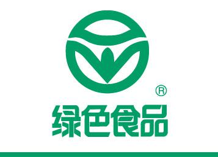

农业认证 / 绿色食品认证

绿色食品认证
绿色食品是指遵循可持续发展原则，按照特定生产方式生产，经专门机构认定，许可使用绿色食品标志，无污染的安全、优质、营养类食品。无污染、安全、优质、营养是绿色食品的特征。无污染是指在绿色食品生产、加工过程中，通过严密监测、控制，防范农药残留、放射性物质、重金属、有害细菌等对食品生产各个环节的污染，以确保绿色食品产品的洁净。
绿色管理食品标志的手段包括技术手段和法律手段。技术手段是指按照绿色食品标准体系对绿色食品产地环境、生产过程及产品质量进行认证，只有符合绿色食品标准的企业和产品才能使用绿色食品标志商标。法律手段是指对使用绿色食品标志的企业和产品实行商标管理。绿色食品标志商标已由中国绿色食品发展中心在国家工商行政管理局注册，专用权受《中华人民共和国商标法》保护。